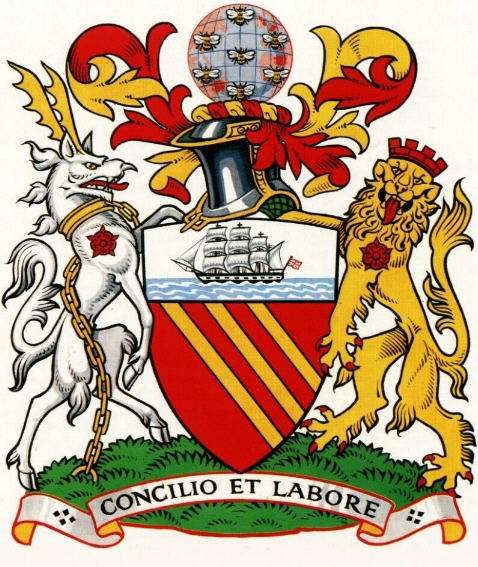
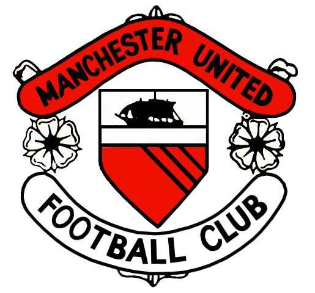
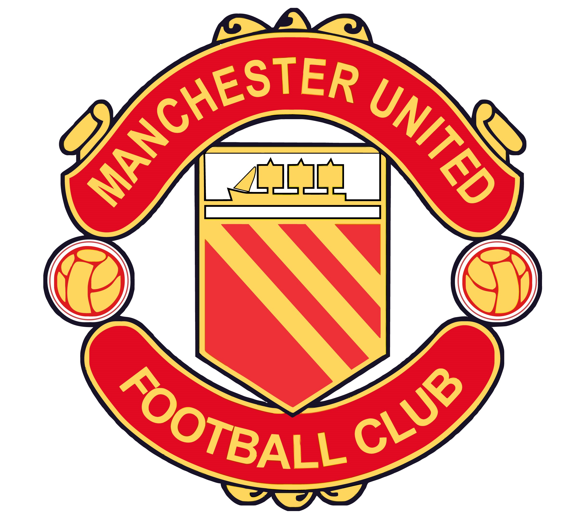
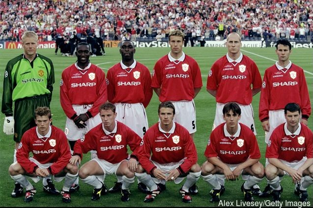

-
Manchester United
-

- About
- Registration
- Products
- Introduction
 Manchester United Football Club is a professional football club based in Old Trafford, Greater Manchester, England, that competes in the Premier League, the top flight of English football. Nicknamed "the Red Devils", the club was founded as Newton Heath LYR Football Club in 1878, changed its name to Manchester United in 1902 and moved to its current stadium, Old Trafford, in 1910.
Manchester United Football Club is a professional football club based in Old Trafford, Greater Manchester, England, that competes in the Premier League, the top flight of English football. Nicknamed "the Red Devils", the club was founded as Newton Heath LYR Football Club in 1878, changed its name to Manchester United in 1902 and moved to its current stadium, Old Trafford, in 1910.
The 1958 Munich air disaster claimed the lives of eight players. In 1968, under the management of Matt Busby, Manchester United became the first English football club to win the European Cup. Alex Ferguson won 38 trophies as manager, including 13 Premier League titles, 5 FA Cups and 2 UEFA Champions Leagues, between 1986 and 2013, when he announced his retirement.

The Manchester United logo you see today is based on the coat of arms of the Manchester City Council. Manchester City Council coat of arms was first embroidered on Manchester United shirts for the big game in 1963 FA Cup Final.
The ship on the Manchester United crest from the early days is a reference to Manchester's trading prowess and the ship canal.
The globe on top represents the city's world trading power while the bees on the globe represent a creature that is known for it's industry and endeavor, with Manchester being the birthplace of industrial revolution, this symbol was added to the early Manchester United logo.
Two animals on the coat of arms are an Antelope and a Lion.
Antelope wears a gold chain that refers to the city's engineering feats and the lion wears a castle crown because the city of Manchester grew up around the Roman settlement of Castle-field.
Both animals wear the red rose which is the official symbol of Lancashire.
"Consilio et Labore" translates as "Wisdom and Effort".

Manchester United badge during the 1960's featured the newly designed badge taking the shield and ship from the Manchester City Council coat of arms, with the words "Manchester United" on the top banner and "Footbal Club" on the bottom banner.
This new badge was designed in line with the new style of play that Matt Busby brought to Manchester United during the late 1940's.

1970's saw the first famous devil symbol on the Manchester United badge replacing the three yellow stripes.
This had been the team's nickname ever since Matt Busby adopted it for the club several years earlier.
He wanted to strike fear into his opponents with a new nickname as he felt the Busby Babes would not do this.
It is said that he got the name from the Salford City Reds rugby league team who were given the nickname Les Diables Rouges (The Red Devils) by the French media after a successful tour of the country in 1934 .
1972-73 saw the Manchester United logo become a permanent feature on the Man United FC football shirt.
Up until then the club would only use the Manchester City Council coat of arms on their shirts in cup finals.
Manchester United FC logo remained pretty much unaltered for the next 28 years.
In 1998 the badge lost the "Football Club" from the banner and replaced it with "United" which of course was taken from the top banner.
The new design was created in an effort to turn Manchester United into a brand as it seemed like the club no longer wanted to be known as just a Manchester United football club.
Manchester United have won more trophies than any other club in English football,with a record 20 League titles, 12 FA Cups, five League Cups and a record 21 FA Community Shields. United have also won three UEFA Champions Leagues, one UEFA Europa League, one UEFA Cup Winners' Cup, one UEFA Super Cup, one Intercontinental Cup and one FIFA Club World Cup. In 1998–99, the club became the first in the history of English football to achieve the continental European treble. By winning the UEFA Europa League in 2016–17, they became one of five clubs to have won all three main UEFA club competitions.
